html-visual-explainer / assets / svgs
解説HTMLの図解に使える、再利用可能なSVGの土台集です。すべてグラレコ（手描き板書風）で描かれているので、 目的に近い部品を選び、同フォルダの .svg を開いて <svg> タグごとコピーし、ラベルと色をトピックに合わせて書き換えるだけで使えます。 流れの破線（class="flow"）を含む図はSVG自身がアニメーションを内蔵しているので、 この一覧でもそのまま動きます（▶ 動く のバッジ付き。prefers-reduced-motion では自動で止まります）。
各図には影つきの箱が1つだけあります＝その図の主役。破線の枠は「まだ整っていない／避けたい状態」の合図です。 この2つの約束を守ると、記事全体で図の“文法”が揃います。
hero-concept.svg ▶ 動く
ヒーロー／導入。主役が問題を解決する様子を1枚で。記事冒頭の「つかみ」に。
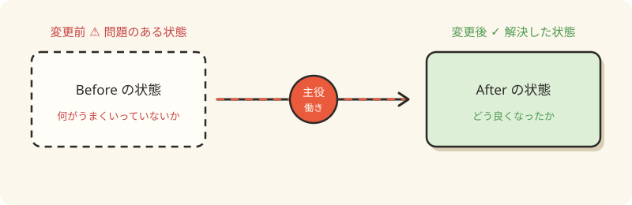
flow-pipeline.svg ▶ 動く
縦の流れ。データや処理が複数の担当を上から下へ順に通る「全体像」に。
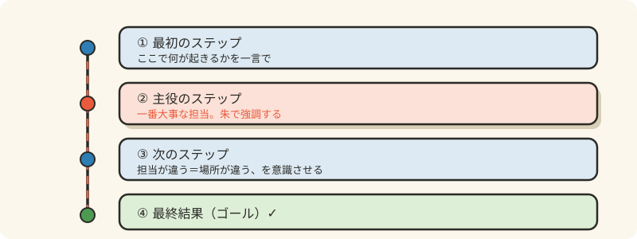
flow-horizontal.svg ▶ 動く
横の流れ。A→変換→B の経路や、翻訳・橋渡し役を示すのに。
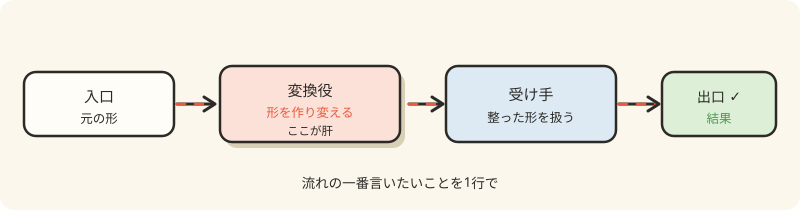
transform-before-after.svg
変換の前後。「入れた物がこう変わって返る」1つの操作の説明に。
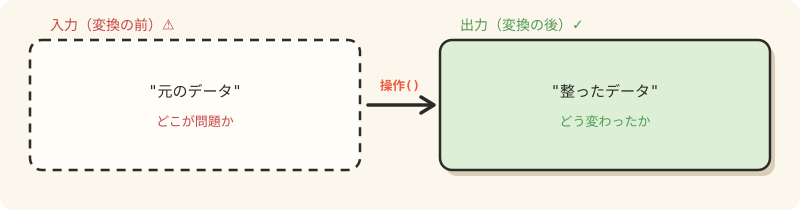
mapping.svg
対応づけ。「A は B、C は D」の対応表・置き換え表に。
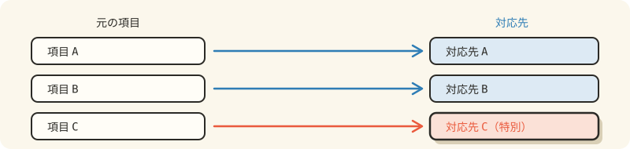
two-paths.svg
分岐。1つの入口が2つの道に分かれ、結末が違う「選択」の説明に。
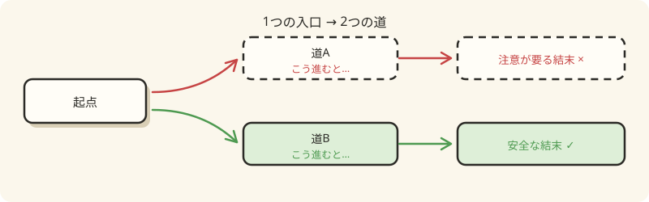
compare-side-by-side.svg
並列比較。ダメな例と良い例を、同じ入力で左右に対比するのに。
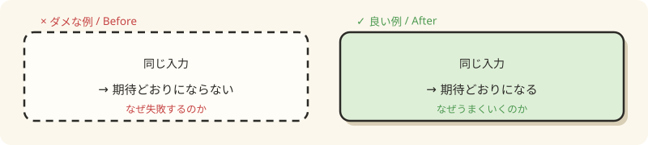
stack-blocks.svg ▶ 動く
積み重ね。確定した部分は再利用し、末尾だけが更新される仕組みに。
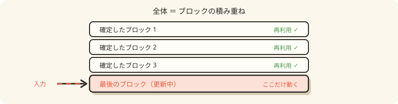
layers.svg
階層／レイヤー。土台の上に積み上がる構造、抽象度の層に。
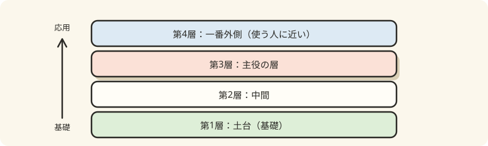
cycle.svg
循環。改善サイクルや、ぐるぐる反復するプロセスに。
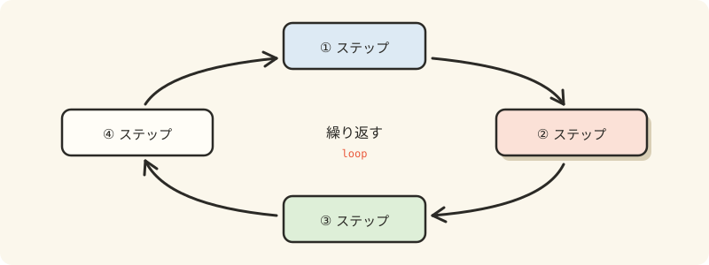
tree.svg
ツリー／分類。全体を枝分かれで分解、カテゴリ構成に。
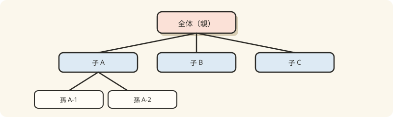
timeline.svg ▶ 動く
時系列／手順。歴史・工程・順番を左から右へ。
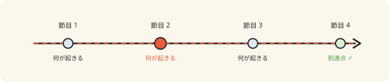
matrix-2x2.svg
2×2マトリクス。2つの軸で4象限に整理（優先度・戦略・分類）に。
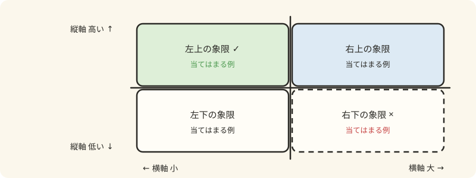
parts-callout.svg
部位注釈。1つの対象の各パーツに引き出し線で解説を付けるのに。
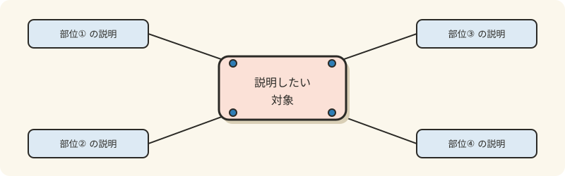